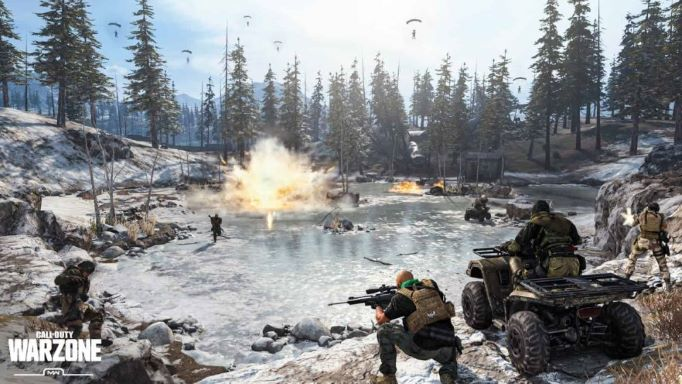
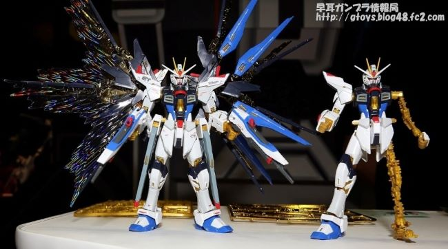

When it comes to hobbies, I honestly didn't really have any at first. I just spent my time, going to work, then the gym, with then going back home and getting ready to do it all over again the following day. As time progressed though, I ended up considering the gym as a hobby, which in turn turend into a life style. I also picked up on building PC's since I found it entertaining and such. On the weekends though, thats a different story, I'll hop on minecraft with a group of friends, or I'll play Warzone with my brother. If im not doing either of those things, I'll continue my Gundam builds, or read a new light novel I picked up called Solo Leveling. Otherwise a night of laser tagging, bowling or arcade gaming is what I enjoy doing as well. What I really do enjoy is going to a music festival every summer, it`s called Spring awakening. Here's a video that shows a small glimps on the type of music that is played and the energy that is given from the crowd and the DJ's themselves.
 